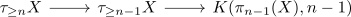

fundamental theorem of serre class theory
Proposition
Let $\mathcal{C}$ be any nice derived serre ring. And $X$ be a connected and simple anima (or even nilpotent anima).
TFAE:
- All homotopy groups of $X$ are contained in $\mathcal{C}$
- All reduced homology groups lie in $\mathcal{C}$
Proof
1) $\implies$ 2)
If $X$ is simple, then in particular so is its truncation (cf. truncation of a simple anima is simple)
Furthermore we have an isomorhpism
for $n$ sufficiently large (cf. n-connected map and homology)
Hence we may assume that $X = \tau_{\leq n}$ for some $n$ and therefore induct on $n$
base case
follows from homology of an eilenberg-mac lane space for a derived serre class
induction
now we have a fiber sequence
where we inductively have that $\tau_{\leq n-1} X$ has reduced
Then again by homology of a nice derived ring we get that $\tilde{H}_{*}(K(\pi_k X, n)) \in \mathcal{C}$.
2) $\implies$ 1)
note that a simple anima has an abelian fundamental group, hence by first hurewicz
Now consider the fiber sequence
Then using homology of an eilenberg-mac lane space for a nice derived serre class we may conclude that $\tilde{H}_*(B \pi_1(X)) \in \mathc l{C}$ for $* \in \mathbb{N}$.
Now using strongly convergent spectral sequence and serre class we may conclude that $\tilde{H}_*(\tau_{\geq 2} X) \in \mathcal{C}$ and by the absolute Hurewicz theorem
Now we may proceed inductively using the fiber sequence

where by induction assumption $\pi_{n-1}(X) \in \mathcal{C}$ and $\tilde{H}_*(\tau_{\geq n-1}(X)) \in \mathcal{C}$.
so again by strongly convergent spectral sequence we have $\tilde{H}_n(\tau_{\geq n} X) \in \mathcal{C}$ resp. using again hurewicz $\pi_n(X) \simeq \tilde{H}_n(\tau_{\geq n} X) \in \mathcal{C}$